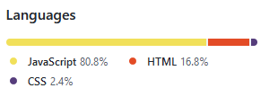

Inicialmente, me tornei estudante de Direito da Vetusta "Casa de Afonso Pena" (UFMG-DIREITO). Durante o curso, me especializei na atuação em Direito Civil, mais especifcamente, Direito Contratual Civil. No 10º período, optei por me matricular na Labenu para satisfazer uma curiosidade que me acompanhava desde quando ainda estava estudando no Segundo Grau, a vontade de aprender programação. Atualmente me encontro cursando de forma integral o curso de Fullstack Developer pela Labenu e, concomitantemente, estou no último período da faculdade de Direito.
"97,6% HTML, JS, perfeito! Mas aquele 2,4% é CSS..."
